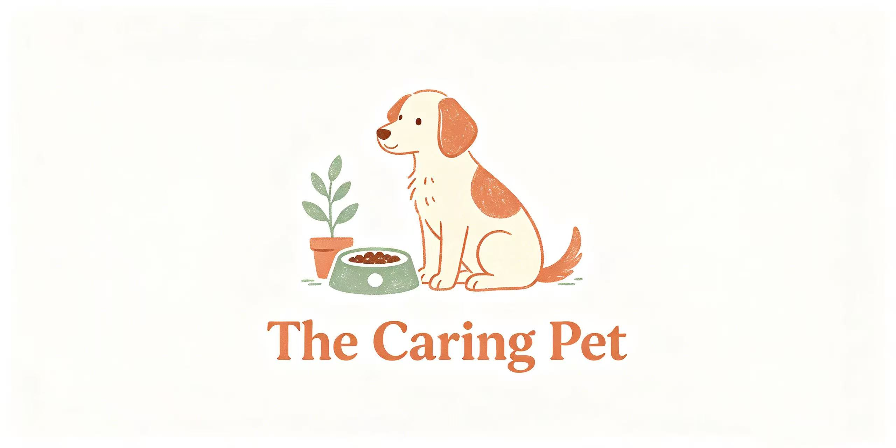

15 vet-aligned checks every dog owner should know

Educational Use Only. This checklist is for general educational purposes and is not a substitute for professional veterinary diagnosis, treatment, or advice. Every dog is different. Always consult your veterinarian for recommendations specific to your dog’s health, breed, age, and medical history.
Emergency Notice. If you suspect your dog is experiencing a medical emergency — especially possible bloat (gastric dilatation-volvulus) — contact your veterinarian or the nearest emergency animal hospital immediately. Do not wait.
Feed large and giant breeds from floor-level bowls.
Use elevated feeders only if your veterinarian recommends them for a specific medical condition.
Choose a bowl that holds the full single-meal portion.
There should be enough room for food to move through maze or channels without spilling.
Match bowl depth to your dog’s snout length.
Flat-faced (brachycephalic) breeds need shallow, wide bowls; long-snouted breeds can use deeper channels.
Use food-safe bowl materials.
Prefer stainless steel, certified lead-free ceramic, or BPA-free / phthalate-free plastic.
Slow down fast eaters.
Use a slow feeder bowl, puzzle feeder, lick mat, or stuffable toy to extend mealtime.
Split the daily food ration into at least two meals.
Most adult dogs do best with two meals per day. Puppies usually need three to four.
Feed in a quiet, low-traffic area.
Keep the feeding spot away from loud noises, household traffic, and competing pets.
Rinse the bowl after every meal.
Remove residue before it dries, especially from grooves and ridges.
Wash the bowl daily with hot soapy water and a brush.
Scrub all textured surfaces where bacteria and biofilm can accumulate.
Run dishwasher-safe bowls through the dishwasher weekly.
Dishwasher cleaning provides the strongest reduction in bacterial contamination.
Inspect bowls weekly for damage.
Look for deep scratches, chips, cracks, or crazing; replace damaged bowls promptly.
Wash your hands and use a dedicated scoop.
Avoid cross-contamination by using a clean utensil reserved for pet food.
Store food safely.
Keep dry food in its original bag inside a clean, dry container. Refrigerate opened wet food and discard food left out for more than two hours.
Check labels, dates, and recall notices.
Verify expiration dates and review FDA pet food recalls before feeding.
Call your veterinarian or the nearest emergency animal hospital if you notice a sudden change in appetite or eating behavior, or any signs of possible bloat: a distended hard abdomen, unproductive retching, restlessness, excessive drooling, pale gums, or collapse.